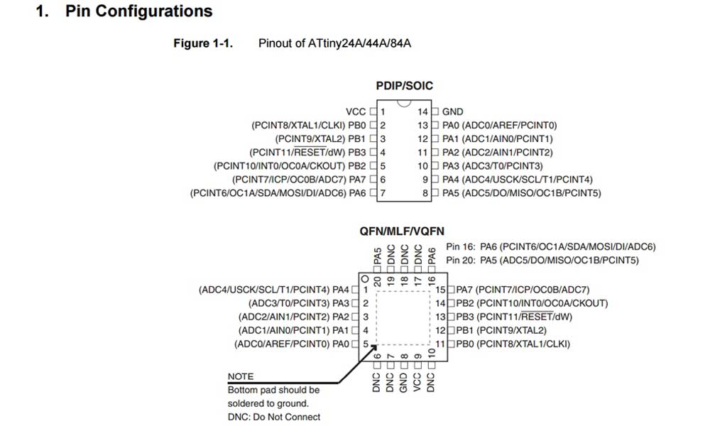
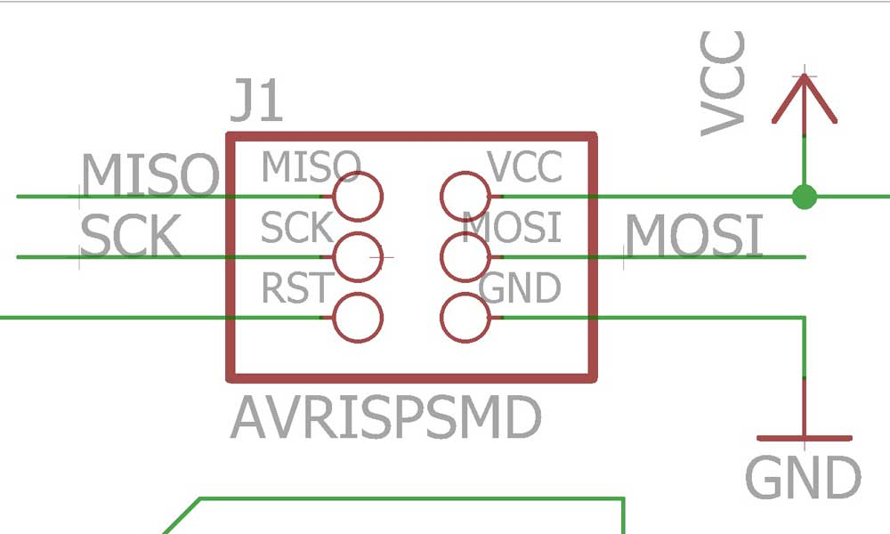
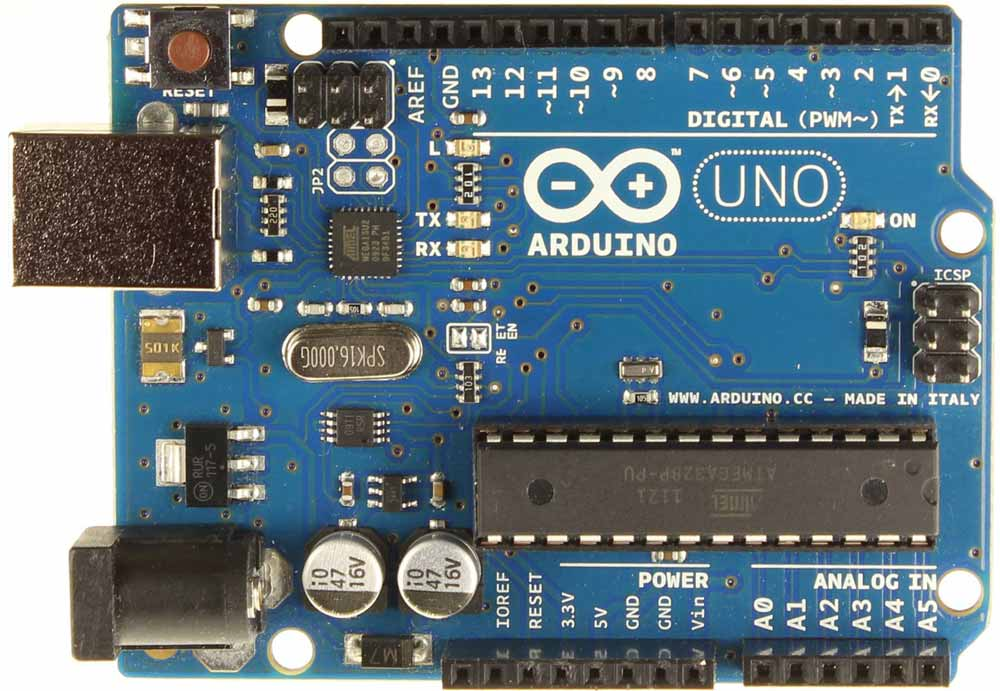
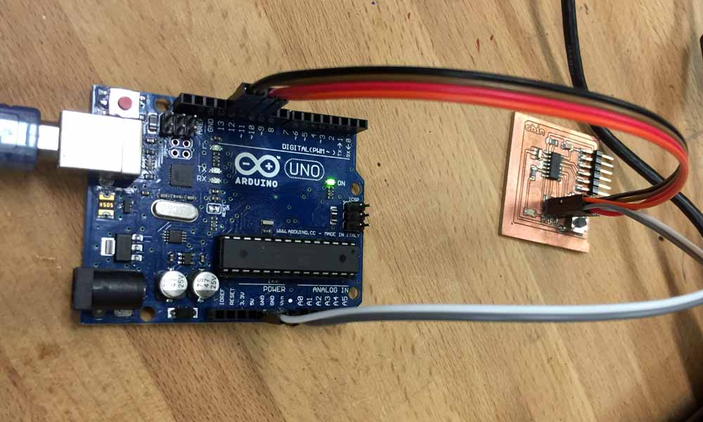
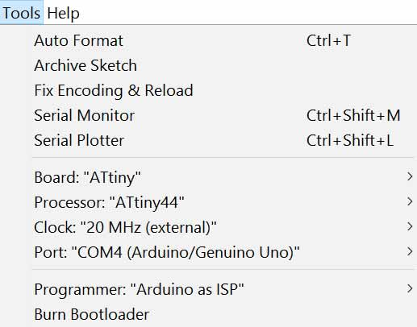
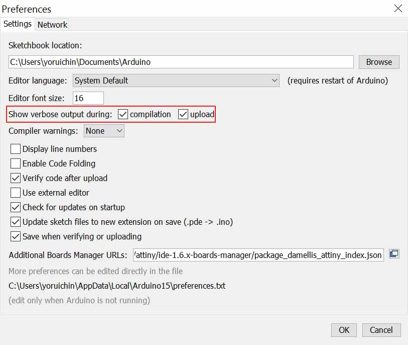
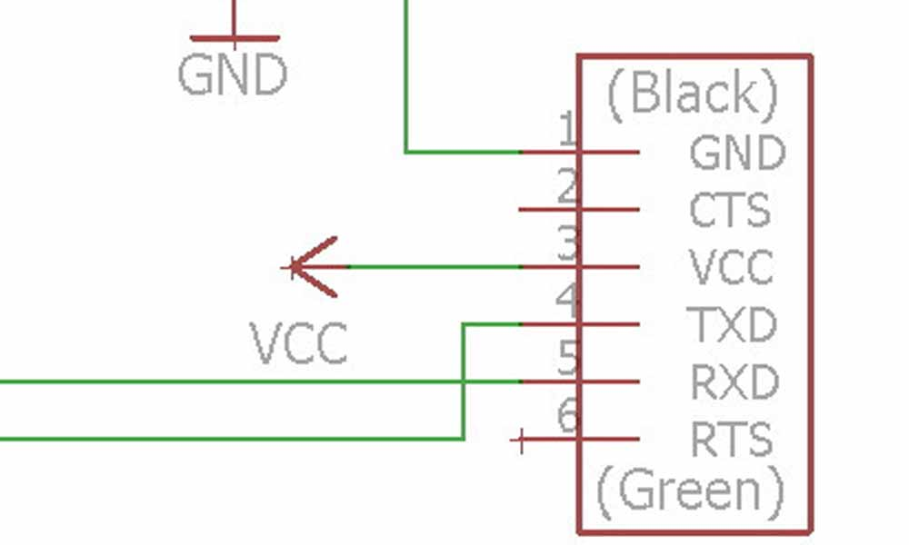
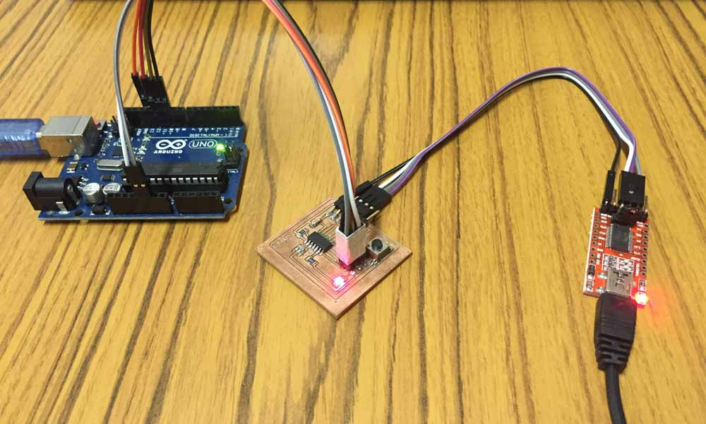
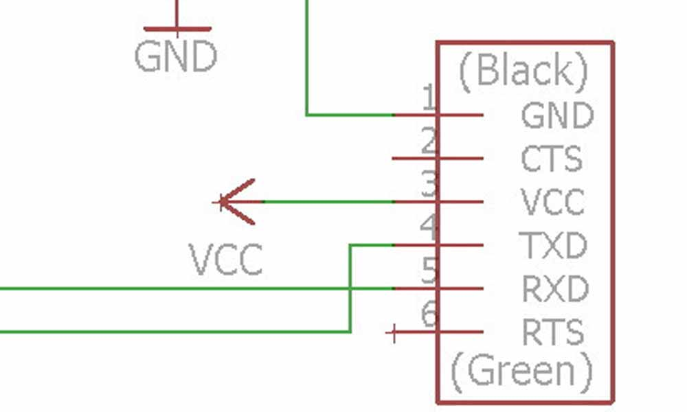
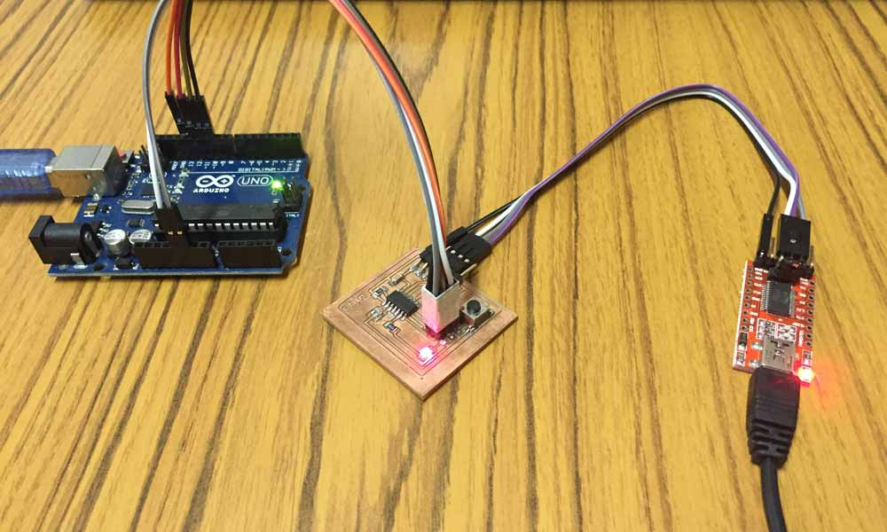

Exercise 08 Embedded Programming
Requirement
- read a microcontroller data sheet
- program your board to do something, with as many different programming languages and programming environments as possible
Datasheet of Atmel Microcontroller
The microcontroller we are working to on is a Atmel ATtiny44A MCU. The difference between a ATtiny44 and a ATtiny44A is that the latter is an optimized version of the former. The ATtiny44A is a functionally identical, drop-in replacement for the ATtiny44. They are subject to the same qualification process and same set of production tests, but as the manufacturing process is not the same, some electrical characteristics differ.
To locate the datasheet of an MCU, go to the Atmel website >> Atmel AVR 8-bit and 32-bit Microcontrollers >> tinyAVR MCUs >> ATtiny44A
- ATtiny24A/44A/84A Complete datasheet, 286 pages
- ATtiny24/44/84 Complete datasheet, 238 pages
- Difference between ATtiny44 and ATtiny44A, 3 pages

Words like PDIP/SOIC/QFN/MLF/VQFN really buffet me, and I came across a helpful article which explains these confusing acronyms.
Characteristics of the ATtiny44A:
- There are 14 pins on this chip.
- VCC supplies voltage.
- GND is ground.
- Port B (PB3:PB0) is a 4-bit bi-directional I/O port with internal pull-up resistors.
- RESET (PB3) A low level on this pin for longer than the minimum pulse length will generate a reset.
- Port A (PA7:PA0) is a 8-bit bi-directional I/O port with internal pull-up resistors. Port A has alternate functions as analog inputs for the ADC, analog comparator, timer/counter, SPI and pin change interrupt.
- CPU(central processing unit) ensures correct program execution by accessing memories, performing calculations, controlling peripherals, and handling interrupts.
- There are three types of memory
- Flash stores the compiled program even when the power is off.
- SRAM saves temporarily variables while calculating.
- EEPROM is for data storage.
- ATtiny44A features successive approximation Analog-to-Digital Converter (ADC). It generates a 10-bit result which is presented in the ADC Data Registers, ADCH and ADCL. ADCL presents only the low byte of the ADC conversion result and ADCH presents only the high byte. ADCL is read first, then ADCH. When ADCH is read, ADC access to the ADCH and ADCL Registers is re-enabled and a new result is provided.
Programming of Microcontroller
To upload a program to a microcontroller (MCU) chip, an ISP programmer is required. In-system programming (ISP), also called In-Circuit Serial Programming (ICSP), is the ability of some programmable logic devices, microcontrollers, and other embedded devices to be programmed while installed in a complete system, rather than requiring the chip to be programmed prior to installing it into the system. I have decided to buy an Arduino Uno, which cost me $21. This will be as a ISP to programme my Hello board, which I milled and stuffed in week 6. The board uses an ATtiny44A AVR chip microcontroller. AVR is a modified Harvard architecture 8-bit RISC single-chip microcontroller, which was developed by Atmel in 1996. The AVR was one of the first microcontroller families to use on-chip flash memory for program storage, as opposed to one-time programmable ROM, EPROM, or EEPROM used by other microcontrollers at that time.
Using an Arduino as an AVR ISP
There is an example sketch in Arduino IDE called ‘ArduinoISP.’ Uploading this code to the Arduino will basically make the Ardunino act as an AVR programmer. This isn’t really recommended for production of boards, or boards with lots of memory.
- Install and launch the Arduino IDE
- Open ArduinoISP sketch from File >> Examples >> ArduionISP
- Select Board >> Arduino Uno
- Select Port that correspond to your port, in my case it's COM4
- Upload the ArduinoISP sketch to the Arduino Uno
- Connect the hello board to the Arduino Uno in the following order:
- VCC: 5V
- GND: GND
- RST: Pin 10
- MOSI: Pin 11
- MISO: Pin 12
- SCK: Pin 13
  
Installing a Bootloader
The bootloader is basically a .hex file that runs when you turn on the board. It is very similar to the BIOS that runs on your PC. It does two things. First, it looks around to see if the computer is trying to program it. If it is, it grabs the program from the computer and uploads it into the ICs memory (in a specific location so as not to overwrite the bootloader). That is why when you try to upload code, the Arduino IDE resets the chip. This basically turns the IC off and back on again so the bootloader can start running again. If the computer isn’t trying to upload code, it tells the chip to run the code that’s already stored in memory. Once it locates and runs your program, the Arduino continuously loops through the program and does so as long as the board has power.
- Tools >> Board >> ATtiny
- Tools >> Processor >> ATtiny44
- Tools >> Clock >> 20 MHz (External)
- Tools >> Port >> select the corresponding port connecting the board
- Tools >> Programmer >> Arduino as ISP
- Burn Bootloader

Programming the Hello board

If all goes well, you should see something like this:
Sketch uses 1,094 bytes (26%) of program storage space. Maximum is 4,096 bytes.
Global variables use 9 bytes of dynamic memory.
C:\Program Files (x86)\Arduino\hardware\tools\avr/bin/avrdude -CC:\Program Files (x86)\Arduino\hardware\tools\avr/etc/avrdude.conf -v -pattiny44 -cstk500v1 -PCOM4 -b19200 -Uflash:w:C:\Users\YORUIC~1\AppData\Local\Temp\build3a1d06f32e72991acd30501dda9c5795.tmp/Blink.ino.hex:i
avrdude: Version 6.0.1, compiled on Apr 15 2015 at 19:59:58
Copyright (c) 2000-2005 Brian Dean, http://www.bdmicro.com/
Copyright (c) 2007-2009 Joerg Wunsch
System wide configuration file is "C:\Program Files (x86)\Arduino\hardware\tools\avr/etc/avrdude.conf"
Using Port : COM4
Using Programmer : stk500v1
Overriding Baud Rate : 19200
AVR Part : ATtiny44
Chip Erase delay : 4500 us
PAGEL : P00
BS2 : P00
RESET disposition : possible i/o
RETRY pulse : SCK
serial program mode : yes
parallel program mode : yes
Timeout : 200
StabDelay : 100
CmdexeDelay : 25
SyncLoops : 32
ByteDelay : 0
PollIndex : 3
PollValue : 0x53
Memory Detail :
Block Poll Page Polled
Memory Type Mode Delay Size Indx Paged Size Size #Pages MinW MaxW ReadBack
----------- ---- ----- ----- ---- ------ ------ ---- ------ ----- ----- ---------
eeprom 65 6 4 0 no 256 4 0 4000 4500 0xff 0xff
flash 65 6 32 0 yes 4096 64 64 4500 4500 0xff 0xff
signature 0 0 0 0 no 3 0 0 0 0 0x00 0x00
lock 0 0 0 0 no 1 0 0 9000 9000 0x00 0x00
lfuse 0 0 0 0 no 1 0 0 9000 9000 0x00 0x00
hfuse 0 0 0 0 no 1 0 0 9000 9000 0x00 0x00
efuse 0 0 0 0 no 1 0 0 9000 9000 0x00 0x00
calibration 0 0 0 0 no 1 0 0 0 0 0x00 0x00
Programmer Type : STK500
Description : Atmel STK500 Version 1.x firmware
Hardware Version: 2
Firmware Version: 1.18
Topcard : Unknown
Vtarget : 0.0 V
Varef : 0.0 V
Oscillator : Off
SCK period : 0.1 us
avrdude: AVR device initialized and ready to accept instructions
Reading | ################################################## | 100% 0.05s
avrdude: Device signature = 0x1e9207
avrdude: NOTE: "flash" memory has been specified, an erase cycle will be performed
To disable this feature, specify the -D option.
avrdude: erasing chip
avrdude: reading input file "C:\Users\YORUIC~1\AppData\Local\Temp\build3a1d06f32e72991acd30501dda9c5795.tmp/Blink.ino.hex"
avrdude: writing flash (1094 bytes):
Writing | ################################################## | 100% 1.91s
avrdude: 1094 bytes of flash written
avrdude: verifying flash memory against C:\Users\YORUIC~1\AppData\Local\Temp\build3a1d06f32e72991acd30501dda9c5795.tmp/Blink.ino.hex:
avrdude: load data flash data from input file C:\Users\YORUIC~1\AppData\Local\Temp\build3a1d06f32e72991acd30501dda9c5795.tmp/Blink.ino.hex:
avrdude: input file C:\Users\YORUIC~1\AppData\Local\Temp\build3a1d06f32e72991acd30501dda9c5795.tmp/Blink.ino.hex contains 1094 bytes
avrdude: reading on-chip flash data:
Reading | ################################################## | 100% 1.25s
avrdude: verifying ...
avrdude: 1094 bytes of flash verified
avrdude done. Thank you.
Modifying the codes of example sketches
Blink at 1 second interval
digitalWrite(7, HIGH); // turn the LED on (HIGH is the voltage level) delay(1000); // wait for a second digitalWrite(7, LOW); // turn the LED off by making the voltage LOW delay(1000);
Blink Faster at 0.1 second interval
digitalWrite(7, HIGH); // turn the LED on (HIGH is the voltage level) delay(100); // wait for a second digitalWrite(7, LOW); // turn the LED off by making the voltage LOW delay(100);
LED turns on only when button is pressed
if (buttonState == HIGH) {
// turn LED on:
digitalWrite(ledPin, LOW);
} else {
// turn LED off:
digitalWrite(ledPin, HIGH);
Toggle LED on and off when a button is pressed
val = digitalRead(BUTTON); // read input value and store it
// check if the input is HIGH (button pressed)
// and change the state
if ((val == HIGH) && (val != old_val)) { // differeniate the exact moment when
// the button is pressed.
state = 1 - state;
delay(10);
}
old_val = val; // val is now old
if (state == 1) {
digitalWrite(LED, HIGH);
} else {
digitalWrite(LED, LOW);
Connecting the Hello board to FTDI USB to TTL Serial Converter
A serial bus consists of just two wires - one for sending data and another for receiving. As such, serial devices should have two serial pins: the receiver, RX, and the transmitter, TX. It’s important to note that those RX and TX labels are with respect to the device itself. So the RX from one device should go to the TX of the other, and vice-versa. The transmitter should be talking to the receiver, not to another transmitter.
 



Display the state of LED on putty terminal via FTDI USB To TTL Serial Converter
if(mySerial.available() > 0){
state = mySerial.read();
flag=0;
}
// read the state of the pushbutton value:
val = digitalRead(buttonPin);
// check if the pushbutton is pressed.
// if it is, the buttonState is HIGH:
// resets written counter to 0
if ((val == HIGH) && (old_val == LOW)) {
state = 1 - state;
flag = 0;
delay(10);
}
old_val = val;
if ((state == 1) && (flag == 0)) {
digitalWrite(ledPin, HIGH); // turn the LED on (HIGH is the voltage level)
mySerial.println("led is on!");
flag = 1;
} else if ((state == 0) && (flag == 0)) {
digitalWrite(ledPin, LOW);
mySerial.println("led is off!");
flag = 1;
}
else {
//do nothing
}
Errors encountered
avrdude: stk500_recv(): programmer is not responding
avrdude: Yikes! Invalid device signature.
Double check connections and try again, or use -F to override
this check.
avrdude: ser_open(): can't set com-state for "\\.\COM4"
avrdude: AVR device initialized and ready to accept instructions
Reading | ################################################## | 100% 0.05s
avrdude: Device signature = 0x000000 (retrying)
Reading | ################################################## | 100% 0.05s
avrdude: Device signature = 0x00ffff
avrdude: Expected signature for ATtiny44 is 1E 92 07
Double check chip, or use -F to override this check.
avrdude done. Thank you.
Wrong microcontroller found. Did you select the right board from the Tools > Board menu?
So far I've encountered with these error messages when I tried to upload the sketch to the board. I tried many ways to troubleshoot, such as exchanging the cables, testing the board with a multimeter for shorts, reflowing in case there's any cold joints, using a classmate's computer and arduino isp, etc and all didn't work. The solution was very odd because it was after I heated up the chip area on the board a little with a hot gun or a hairdryer, it was able to load the program! Somehow heating the board a little causes it to work. That really puzzles me!
Download Week 8 work files
- blink.ino
- display_led_state_onto_terminal_when_button_is_pressed.ino
- toggle_on_off_when_button_is_pressed.ino
- turn_on_led_when_button_is_being_pressed.ino
References
- IC Packages
- Programming AVR with Arduino
- WHAT IS AVR MICROCONTROLLER?
- Installing an Arduino Bootloader
- Yumi Nishihara's Embedded programming
- Serial Communication